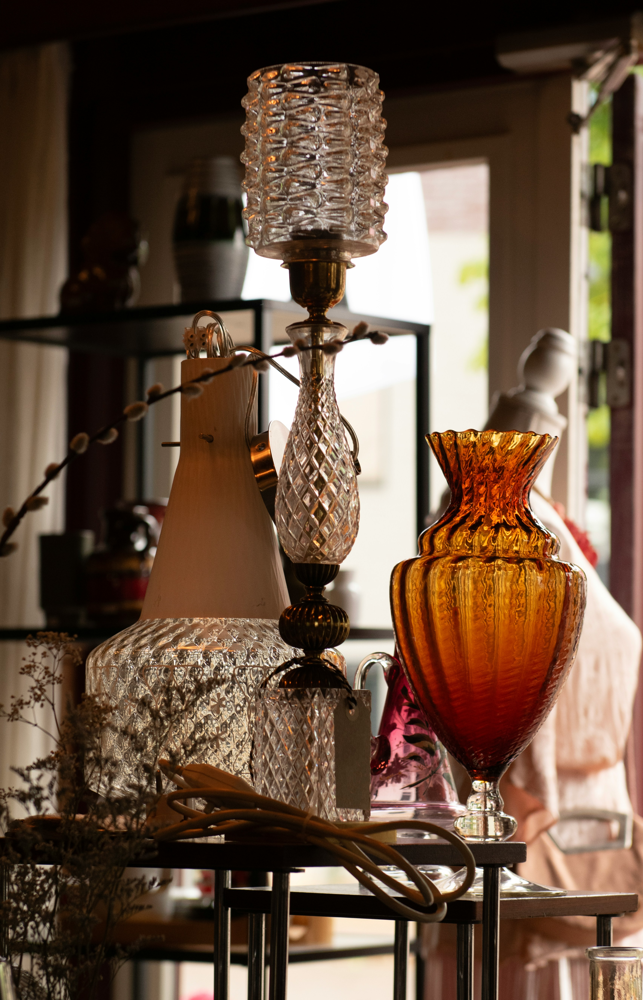

Welcome to Cedar House
thoughtfully curated vintage & antique wares

Nestled in the heart of a charming historic district, Cedar House, is as much a reflection of Alissa as it is a destination for lovers of history and craftsmanship. Alissa's passion for antiques began during her childhood, scouring flea markets with her grandmother and learning the art of spotting hidden gems.


